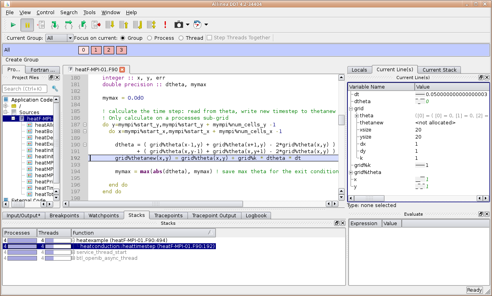

Debugging#
Debugging is an essential but also rather time consuming step during application development. Tools dramatically reduce the amount of time spent to detect errors. Besides the “classical” serial programming errors, which may usually be easily detected with a regular debugger, there exist programming errors that result from the usage of OpenMP, Pthreads, or MPI. These errors may also be detected with debuggers (preferably debuggers with support for parallel applications), however, specialized tools like MPI checking tools (e.g. Marmot) or thread checking tools (e.g. Intel Thread Checker) can simplify this task.
This page provides detailed information on classic debugging at ZIH systems. The more specific topic MPI Usage Error Detection covers tools to detect MPI usage errors.
Overview of available Debuggers at ZIH#
GDB |
Arm DDT |
|
|---|---|---|
Interface |
Command line |
Graphical user interface |
Languages |
C/C++, Fortran |
C/C++, Fortran, Python (limited) |
Parallel Debugging |
Threads |
Threads, MPI, GPU, hybrid |
Licenses at ZIH |
Free |
1024 (max. number of processes/threads) |
Official documentation |
General Advice#
You need to compile your code with the flag
-gto enable debugging. This tells the compiler to include information about variable and function names, source code lines etc. into the executable.It is also recommendable to reduce or even disable optimizations (
-O0or gcc’s-Og). At least inlining should be disabled (usually-fno-inline).For parallel applications: try to reproduce the problem with less processes or threads before using a parallel debugger.
Use the compiler’s check capabilities to find typical problems at compile time or run time, read the manual (
man gcc,man ifort, etc.)Intel C++ example:
icpc -g -std=c++14 -w3 -check=stack,uninit -check-pointers=rw -fp-trap=allIntel Fortran example:
ifort -g -std03 -warn all -check all -fpe-all=0 -tracebackThe flag
-tracebackof the Intel Fortran compiler causes to print stack trace and source code location when the program terminates abnormally.
If your program crashes and you get an address of the failing instruction, you can get the source code line with the command
addr2line -e <executable> <address>(if compiled with-g).Use Memory Debuggers to verify the proper usage of memory.
Core dumps are useful when your program crashes after a long runtime with a segmentation fault (segfault).
The creation of core dumps must be explicitly enabled with the command
ulimit -c <size>.Core files are created in the current directory with the name
.core.<hostname>.<pid>.
Slides from user training: Introduction to Parallel Debugging
GNU Debugger (GDB)#
The GNU Debugger (GDB) offers only limited to no support for parallel applications and Fortran 90. However, it might be the debugger you are most used to. GDB works best for serial programs. You can start GDB in several ways:
Command |
|
|---|---|
Run program under GDB |
|
Attach running program to GDB |
|
Open a core dump |
|
This GDB Reference Sheet makes life easier when you often use GDB.
Fortran 90 programmers may issue an module load DDT before their debug session. This makes the GDB
modified by DDT available, which has better support for Fortran 90 (e.g. derived types).
Arm DDT#

Intuitive graphical user interface and great support for parallel applications
We have 1024 licenses, so many user can use this tool for parallel debugging
Don’t expect that debugging an MPI program with hundreds of processes will always work without problems
The more processes and nodes involved, the higher is the probability for timeouts or other problems
Debug with as few processes as required to reproduce the bug you want to find
Module to load before using:
module load DDTStart:ddt <executable>If the GUI runs too slow over your remote connection: Use WebVNC to start a remote desktop session in a web browser.
Slides from user training: Parallel Debugging with DDT
Serial Program Example#
marie@login$ module load DDT
Module DDT/24.0.5 loaded.
marie@login$ srun --pty --x11=first --ntasks=1 --time=2:00:00 bash
srun: job 123456 queued and waiting for resources
srun: job 123456 has been allocated resources
marie@compute$ ddt ./myprog
Run dialog window of DDT opens.
Optionally: configure options like program arguments.
Hit Run.
Multi-threaded Program Example#
marie@login$ module load DDT
Module DDT/24.0.5 loaded.
marie@login$ srun --pty --x11=first --ntasks=1 --cpus-per-task=5 --time=2:00:00 bash
srun: job 123457 queued and waiting for resources
srun: job 123457 has been allocated resources
marie@compute$ ddt ./myprog
Run dialog window of DDT opens.
Optionally: configure options like program arguments.
If OpenMP: set number of threads.
Hit Run.
MPI-Parallel Program Example#
marie@login$ salloc --x11=first --ntasks=2 --time=2:00:00
salloc: Pending job allocation 123458
salloc: job 123458 queued and waiting for resources
salloc: job 123458 has been allocated resources
salloc: Granted job allocation 123458
marie@login$ ddt srun ./myprog
Run dialog window of DDT opens.
If MPI-OpenMP-hybrid: set number of threads.
Hit Run
!!! hint “DDT hangs during startup”
DDT caches information from previous runs, including references to previously loaded executables.
If the filesystem containing one of these executables becomes unresponsive, DDT may hang during
startup while attempting to access it.
To avoid this, disable cache loading by overriding the configuration directory at startup:
```
marie@login$ ALLINEA_CONFIG_DIR="$(mktemp -d)" ddt srun ./myprog
```
Memory Debugging#
Memory debuggers find memory management bugs, e.g.
Use of non-initialized memory
Access memory out of allocated bounds
DDT has memory debugging included (needs to be enabled in the run dialog)
Valgrind (Memcheck)#
Simulation of the program run in a virtual machine which accurately observes memory operations.
Extreme run time slow-down: use small program runs!
Finds more memory errors than other debuggers.
Further information:
Memcheck Manual (explanation of output, command-line options)
For serial or multi-threaded programs:
marie@login$ module load Valgrind
Module Valgrind/3.14.0-foss-2018b and 12 dependencies loaded.
marie@login$ srun --ntasks=1 valgrind ./myprog
Not recommended for MPI parallel programs, since usually the MPI library will throw a lot of errors. But you may use Valgrind the following way such that every rank writes its own Valgrind log file:
marie@login$ module load Valgrind
Module Valgrind/3.14.0-foss-2018b and 12 dependencies loaded.
marie@login$ srun --ntasks=4 valgrind --log-file=valgrind-%p.out ./myprog